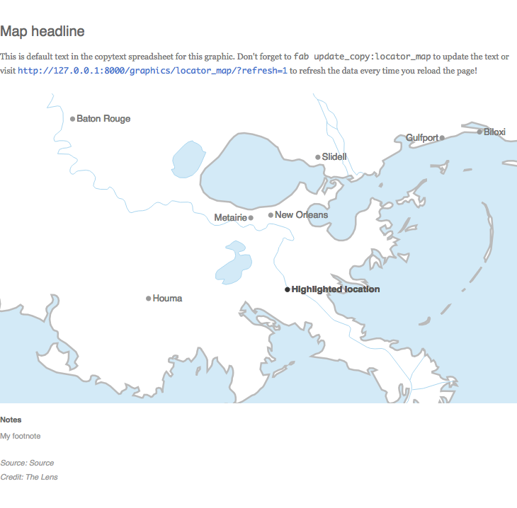

Map headline
This is default text in the copytext spreadsheet for this graphic. Don't forget to
fab update_copy:locator_map
to update the text or visit
http://127.0.0.1:8000/graphics/locator_map/?refresh=1
to refresh the data every time you reload the page!

Notes
My footnote